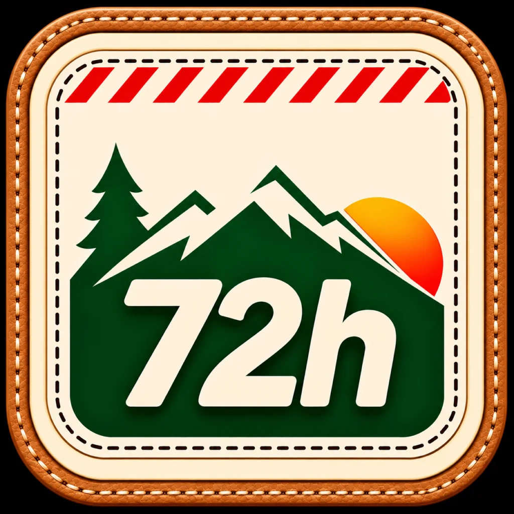
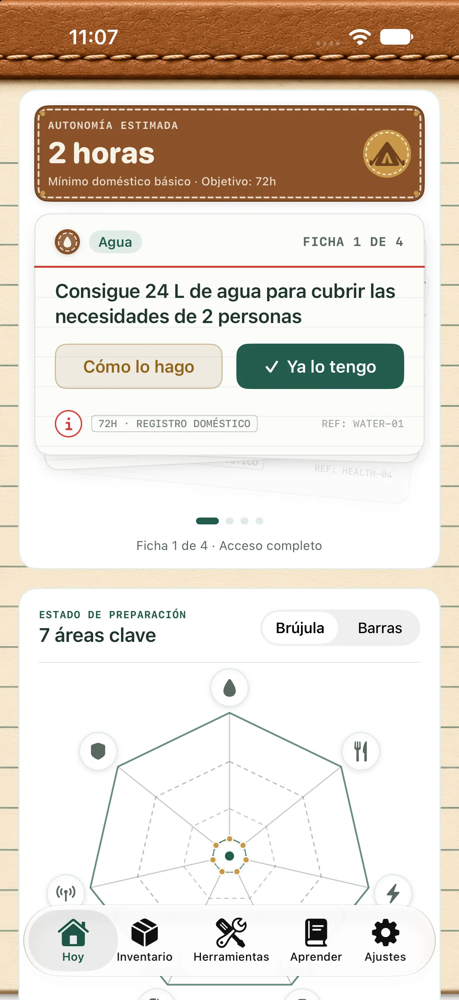
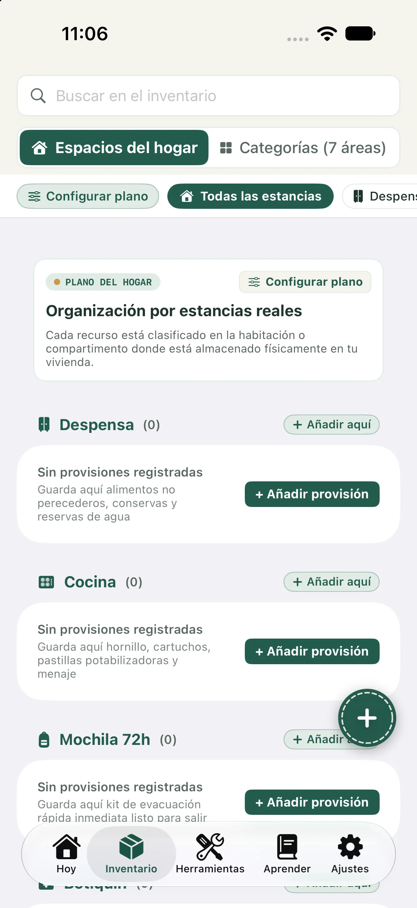
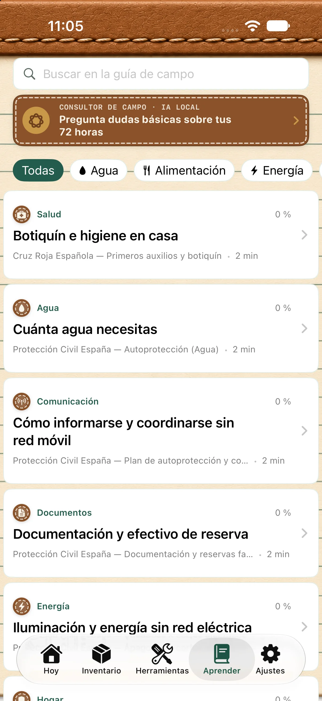
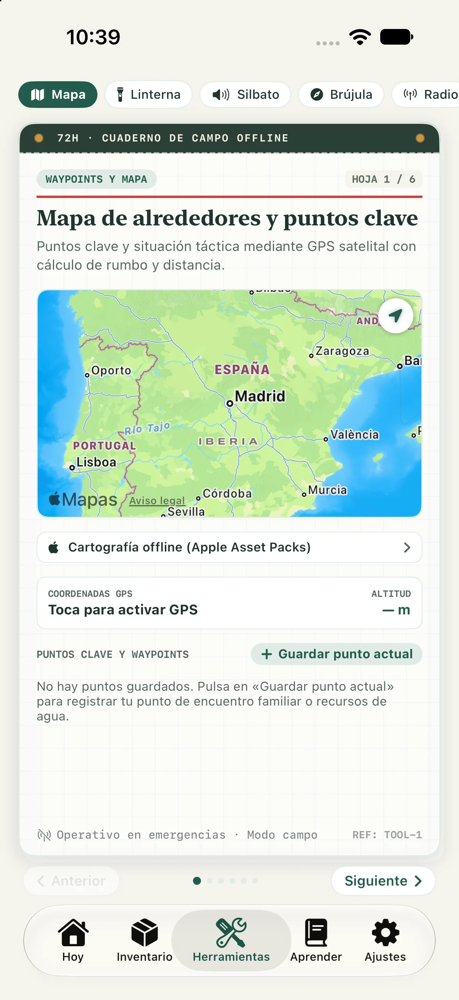

Describe el hogar
Indica adultos, niños, mascotas, clima y algunas necesidades de atención. La app ajusta sus referencias de agua y alimentación a esos datos.

iPhone y iPad · iOS 18 o posteriorRegistra quién vive en casa y organiza tus provisiones de emergencia por espacios, incluida la mochila de 72 horas. Consulta una estimación de agua, comida, energía y salud frente al objetivo de tres días, y revisa las carencias que puedes preparar para un apagón, un corte de agua u otra emergencia.

Para el preparacionismo doméstico y la preparación tipo prepper: registra agua, alimentos, energía y salud, compara las provisiones con un objetivo de 72 horas y revisa qué puedes completar en casa.
Indica adultos, niños, mascotas, clima y algunas necesidades de atención. La app ajusta sus referencias de agua y alimentación a esos datos.
Añade productos, cantidades, caducidades, fotos, notas y el espacio donde los guardas. Puedes configurar espacios como despensa o trastero.
Consulta la estimación de autonomía y el estado de las áreas disponibles. Las fichas sugieren tareas; puedes marcarlas como completadas o abrir su guía.
Desliza para ver cómo se estima la autonomía, se organizan las provisiones y se consultan los artículos y utilidades Premium.



Las funciones que corresponden a las pantallas y servicios de la versión actual.
Compara las existencias registradas con un objetivo de 72 horas y consulta el desglose del cálculo.
Agua, alimentación, energía, salud, documentos, comunicación y seguridad del hogar; tres áreas requieren acceso completo.
Un mazo de hasta cuatro tareas visibles prioriza qué puedes preparar a continuación según las carencias detectadas.
Organiza cantidad, ubicación, caducidad, notas e imágenes. Exporta e importa una copia local en formato JSON.
Consulta artículos breves con referencias enlazadas. La lista puede ordenarse en función de la cobertura del hogar.
Responde dudas sobre preparación en el propio dispositivo con Apple Intelligence, cuando el modelo y el dispositivo sean compatibles.
Premium reúne seis páginas: mapa y puntos guardados, destello SOS, silbato, brújula, frecuencias y cálculo de racionamiento de agua.
La interfaz se ofrece en español e inglés. Sigue el idioma del sistema o permite elegirlo en Ajustes.
Las fichas y artículos muestran sus fuentes para que puedas consultarlas.
Las referencias se adaptan a la región: en España, consulta Protección Civil , Cruz Roja Española y Ministerio de Sanidad y Banco de España; fuera de España, algunas referencias enlazan FEMA Ready.gov . Los cálculos usan valores orientativos para el hogar; no sustituyen las instrucciones de las autoridades ni consejos médicos.
La estimación no garantiza ni certifica la seguridad del hogar. En una emergencia real, sigue las instrucciones de los servicios de emergencia y las autoridades competentes.
Las funciones de inventario y cálculo usan datos locales. Para descargar cartografía sin conexión, abrir enlaces externos o comprar/restaurar Premium se necesita conexión. GPS requiere permiso de ubicación.
No. No hay registro, correo ni contraseña de 72 horas. El perfil, el inventario, las fotos y las notas se guardan en el dispositivo. Las compras usan la infraestructura de Apple y RevenueCat.
Compara las cantidades registradas con referencias de agua y calorías para el hogar y muestra una estimación y su desglose. Es orientativa, no una garantía de seguridad.
Las fichas que siguen a las primeras cuatro, las áreas de documentos, comunicación y seguridad del hogar, y el Cuaderno de Herramientas completo con seis utilidades.
El inventario, los cálculos y el contenido incluido funcionan en el dispositivo. Las descargas de mapas, las compras y su restauración necesitan conexión. Descarga la cartografía antes de depender de ella sin red.
No. Usa Apple Intelligence y solo responde cuando la función está disponible en el dispositivo y el sistema compatibles; si no está disponible, la app lo indica.
La guía de agua abre enlaces externos a comercios; algunos pueden ser enlaces de afiliación.
Interfaz en español e inglés para iPhone y iPad con iOS/iPadOS 18 o posterior. El Consultor tiene requisitos de compatibilidad adicionales.